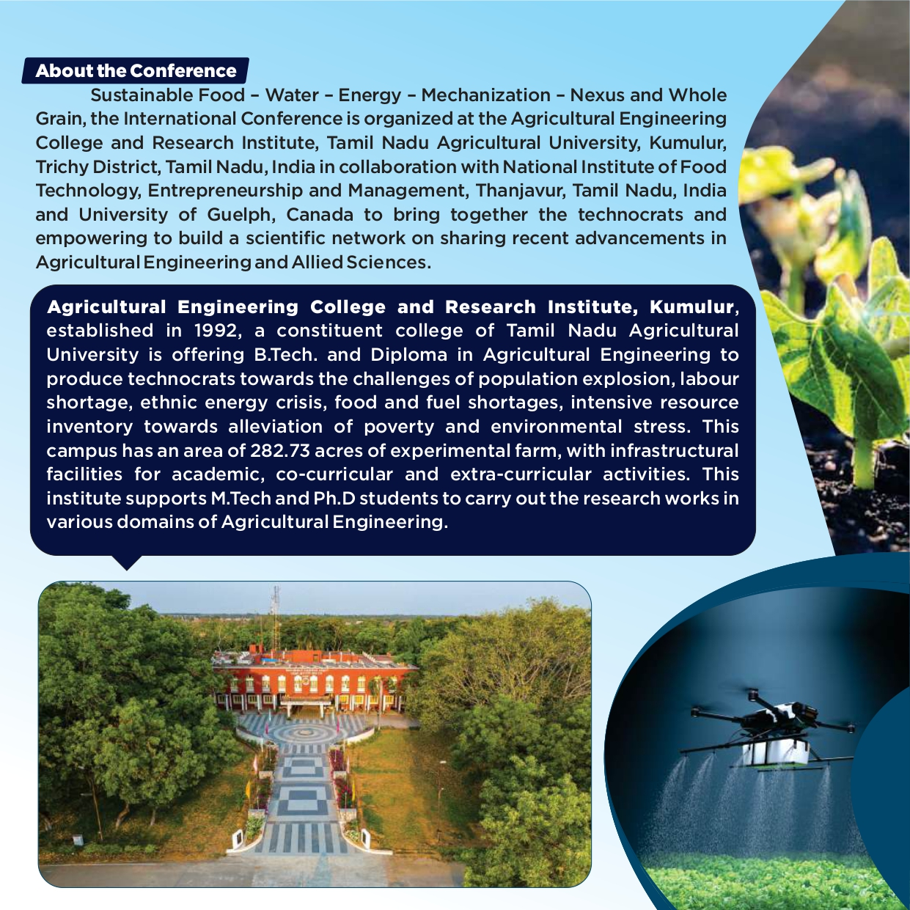

About the Conference
The International Conference on Sustainable Food - Water - Energy - Mechanization - Nexus and Whole Grain aims to bring together technocrats to empower them with a scientific network to share recent advancements in Agricultural Engineering and Allied Sciences.
Organized by:
The conference is organized by the Agricultural Engineering College and Research Institute, Tamil Nadu Agricultural University, Kumulur, Tiruchirappalli District, Tamil Nadu, in collaboration with The University of Guelph, Canada.
Objectives:
- Promote sustainable practices in agriculture, food, water, and energy sectors.
- Facilitate the exchange of knowledge and innovations in agricultural engineering.
- Enhance collaboration between academia, industry, and research institutions.
- Encourage young researchers and students to contribute to the field.

Key Themes:
- Agro Machinery: Design and Development
- Soil and Water Conservation Engineering Techniques in Agriculture
- Food, Value Addition, Storage & Post-harvest Technologies
- Renewable Energy & Biotechnology in Agriculture
- Automation, AI, IoT and Robotics in Digital Agriculture
- Urban Horticulture and Landscape
- Sustainable Agriculture, Climate Resilient and Precision Farming
- Food Sciences and Dairy Technology
- Entrepreneurship in Emerging Markets: Challenges and Opportunities